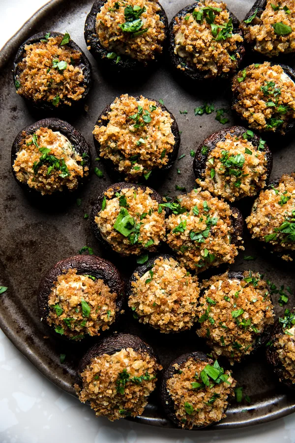

Stuffed Mushrooms
Home

Mushroom caps stuffed with a cheese filling and a crisp baked breadcrumb topping.
Stuffed mushrooms are the perfect party bite for the holidays! Warm and cheesy, vegetarian friendly and easy to make ahead of time, they’re the best appetizer ever. Prep them ahead of time, and just pop them in the oven when people arrive. Easy! When hosting a big party, load a big table with crowd-pleasing holiday appetizers. Easy olives, warm baked brie, bacon-wrapped scallops and jalapeño poppers are a few go-tos that can be mostly prepped ahead of time.
Ingredients
- 20 whole cremini mushrooms
- 4 tablespoons unsalted butter
- 1 small shallot, minced (about 2-3 tablespoons)
- 1 large garlic clove, minced
- 6 ounces cream cheese, room temperature
- 1/4 cup freshly grated Parmesan cheese
- 1/4 teaspoon sea salt
- 1/4 teaspoon freshly cracked black pepper
- 1/2 teaspoon onion powder
- 1/4 teaspoon cayenne pepper
- 3 tablespoons minced fresh flat leaf parsley, plus more for garnish
- 1/2 cup panko breadcrumbs
Steps
- Preheat the oven to 350°F with a rack in the center position. Set a cooling rack inside a rimmed sheet pan.
- Carefully destem the mushrooms. Trim the rough ends off the stems, then mince the stems.
- Melt 2 tablespoons of the butter in a large skillet over medium heat. When the butter begins to sizzle, stir in the shallot, garlic, and mushroom stems. Cook until the shallots and mushrooms are softened, about 4 minutes. Transfer the shallot mixture to a medium bowl. Stir in the cream cheese, Parmesan, salt, pepper, onion powder, cayenne, and the parsley until combined. Chill in the fridge for 30 minutes.
- Evenly divide the filling between the mushroom caps, and place on the prepared sheet pan.
- Add the remaining 2 tablespoons butter to a medium microwave safe bowl, heat in the microwave until melted, about 45 seconds. Stir the panko into the melted butter. Dip the stuffing side of each mushroom into the panko, gently pressing to coat. Return to the sheet pan. Bake for 25 minutes, or until the mushrooms are tender and the breadcrumbs are golden brown. Sprinkle with remaining tablespoon parsley. Serve warm.